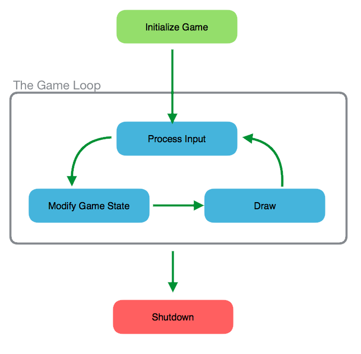

Introduction
Most game development engines use the concept of a game loop. The game loop is a set of execution steps that occurr over and over again as long as the game is running. Understanding how the game loop operates will help you as you complete your projects for this course.
Initialize Game
When the process launches, the first step is to initialize the game paramters and set up the game loop:
int main(int argc, char ** argv)
{
Point topLeft(-200, 200);
Point bottomRight(200, -200);
Interface ui(argc, argv, "My Awesome Game", topLeft, bottomRight);
Game game(topLeft, bottomRight);
ui.run(callBack, &game);
return 0;
}
First, we create some boundaries for our game. Our game window will be 400x400 pixels, with the origin (0,0) at the center of the window.
Next, we create the Interface object, which controls the game loop and provides some helper function for discovering which buttons the user is pressing.
Third, we create our Game object. The Game class contains all of the logic for our game. In particular, it contains methods for each of the phases of the game loop.
Finally, we call the run method on the Interface class, specifying the callback function we want to use for our game loop, and a reference to the object that contains our game logic. This object will be passed to the callback function each time it is called.
The Callback Function and the Game Loop
The callback function is essentially the game loop. It will be called once for every "frame". Most games run at a speed of 30 - 60 frames every second. This means that the callback function will be executed 30 - 60 times every second:
void callBack(const Interface *pUI, void *p)
{
Game *pGame = (Game *)p;
pGame->handleInput(*pUI);
pGame->advance();
pGame->draw(*pUI);
}
Inside our callback function, we are given a void pointer, which we first must cast to a Game object pointer.
Then we call the methods on the Game class that correspond to the three steps of the game loop. First, we call the handleInput function in order to handle any key presses the user is making. This function takes a pointer to an Interface class instance, which is provided as a paramter of the callback function.
Next, we call the advance function to update the game state of all of the objects in our game world.
Finally, we call the draw function, which handles drawing the game objects on the screen.
handleInput()
In the handleInput function, we see what keys the user is pressing, and modify our game objects to respond to those keys:
void Game::handleInput(const Interface & ui)
{
if (ui.isLeft())
{
myRobot.moveLeft();
}
if (ui.isRight())
{
myRobot.moveRight();
}
if (ui.isSpace())
{
myRobot.fireLaser();
}
}
}
An important thing to note here is that the methods being called on the robot object do not directly affect the drawing of the robot. Instead, they modify the properties of the robot object, which the drawing portion of the game loop will use to draw the robot on the screen.
advance()
In the advance function of our game loop, we handle the passage of time. What things should happen as time progresses, regardless of what buttons the user is pressing? Those are the things that happen in this portion of the game loop:
void Game::advance()
{
// Loop through all of the bad guys and have them move
// towards the robot and fire if they're in range
for(int i = 0; i < badGuys.size(); i++)
{
badGuys[i].turnTowardsPlayer(myRobot);
badGuys[i].fireIfInRangeOfPlayer(myRobot);
}
}
To review, if code should happen every frame, regardless of what the player is doing, that code belongs in the advance function.
draw()
The final part of the game loop is the draw function. In this function, every object that is on the screen is drawn. A key point to remember is that every time the draw function is executed, we're starting with a blank slate. This means that everything has to be drawn on the screen every time we pass through the game loop:
void Game::draw(const Interface & ui)
{
// Loop through all of the bad guys and draw them
for(int i = 0; i < badGuys.size(); i++)
{
badGuys[i].draw();
}
myRobot.draw();
}
In the above code, we call the draw function on each of the enemies, then call the draw function on the player's robot object.
Each of these functions will need to execute the appropriate code for drawing themselves on the screen.